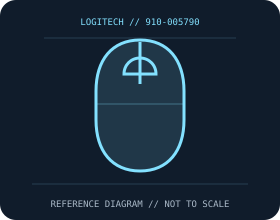

[ MICE AND TRACKBALLS // IDENTIFIED COMPONENT ]
Logitech G203 LIGHTSYNC Gaming Mouse
Compact, ambidextrous wired gaming mouse with LIGHTSYNC lighting and adjustable optical tracking.

MODEL IDENTIFICATION: 910-005790. Confirm printed identifiers, revision, region, and included accessories before repair or compatibility claims.
Model specifications
| Catalog leaf | Mice and trackballs |
|---|---|
| Exact model / identifier | 910-005790 |
| Sensor and switches | Optical gaming sensor, adjustable 200–8,000 DPI; 1,000 Hz report rate. Mechanical main-button switches with spring tensioning; Logitech does not identify a universal switch vendor for all production revisions. |
| Wired/wireless interface; polling and DPI | Wired USB-A; no wireless radio or battery. G HUB configures DPI stages, buttons, and LIGHTSYNC on supported operating systems. |
| Dimensions and weight | 116.6 × 62.15 × 38.2 mm; 85 g without cable. |
| Host and driver compatibility | USB HID provides basic pointer input on compatible computers. Advanced G HUB features and profiles depend on supported Windows/macOS versions and may not be available on other hosts. |
| Power and battery | USB bus powered; no battery or charging circuit. |
| Revision and SKU caveats | Confirm SKU 910-005790 and region/color. G203 LIGHTSYNC is not interchangeable with the earlier G203 Prodigy or similar G102 regional model; labeling, firmware, and available software features may differ. |
Preservation and service
Keep the receiver, cable, battery cover, and included accessories with the identified mouse. Clean optical apertures and trackball contacts without introducing liquid; record host OS, driver/firmware version, connection mode, and battery condition during tests.
Published maximum DPI, polling, click-life, and runtime values are manufacturer figures under specific test conditions, not a guarantee of individual-unit performance.
Manufacturer sources
- Logitech G203 LIGHTSYNC product pageManufacturer product or support documentation; confirm the exact SKU, region, and revision against the device label.
- Logitech G203 support and downloadsManufacturer product or support documentation; confirm the exact SKU, region, and revision against the device label.
Manufacturer documentation changes over time; retain the applicable manual and revision with the physical equipment record.